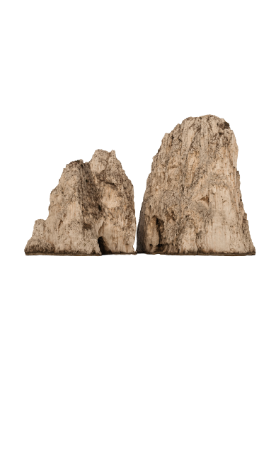

2016《水域遊憩管理辦法》第5條第1項及第2項：水域遊憩活動管理機關依本條例第三十六條規定限制水域遊憩活動之種類、範圍、時間及行為時，應公告之。前項水域遊憩活動之種類、範圍、時間及土地使用，涉及其他機關權責範圍者，應協調該權責單位同意後辦理。
2016《水域遊憩管理辦法》第6條：水域遊憩活動管理機關得視水域環境及資源條件之狀況，公告禁止水域遊憩活動區域。

2019《發展觀光條例》第36條第1項：為維護遊客安全，水域遊憩活動管理機關得對水域遊憩活動之種類、範圍、時間及行為限制之，並得視水域環境及資源條件之狀況，公告禁止水域遊憩活動區域；其禁止、限制及應遵守事項之管理辦法，由主管機關會商有關機關定之。
2019《發展觀光條例》第60條第1項：於公告禁止區域從事水域遊憩活動或不遵守水域遊憩活動管理機關對有關水域遊憩活動所為種類、範圍、時間及行為之限制命令者，由其水域遊憩活動管理機關處新臺幣一萬元以上五萬元以下罰鍰，並禁止其活動。

2009～2021各縣市政府《公園管理自治條例》：在公園裡不得在水池或湖泊內游泳、沐浴、洗滌、網魚、釣魚、銼魚、放生、划船或其他污染毒害水質及傷害動植物之行為。但經主管機關公告在指定地點得划船、釣魚者，不在此限。